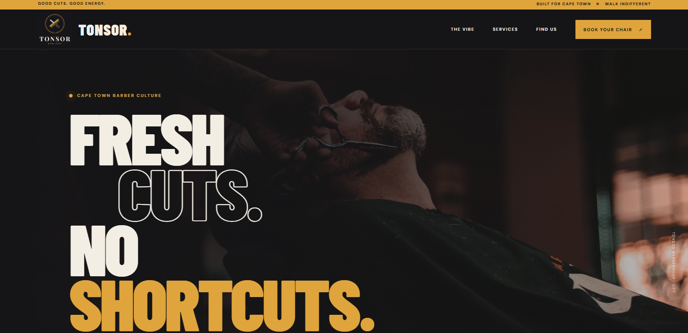

TONSOR — Barber & booking experience
A modern barber website concept combining a strong visual identity, service information and a streamlined booking journey.
PORTFOLIO CONCEPT · IN DEVELOPMENT01 / SELECTED WORK
A growing collection of digital projects, concepts and websites created with purpose, creativity and attention to detail.

A modern barber website concept combining a strong visual identity, service information and a streamlined booking journey.
PORTFOLIO CONCEPT · IN DEVELOPMENTWe're building our portfolio. We'd love the next project to be yours.
Work with us ↗HAVE A PROJECT IN MIND?